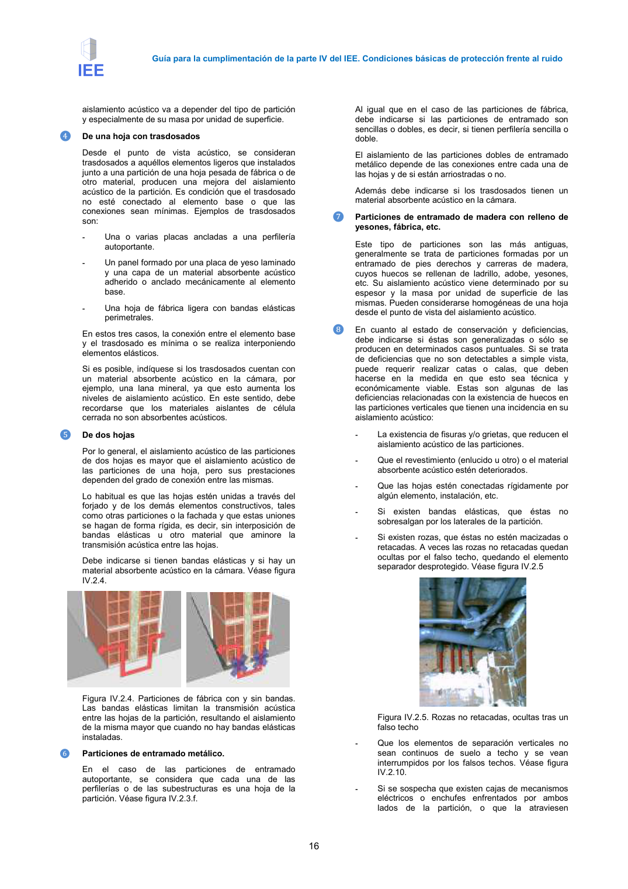
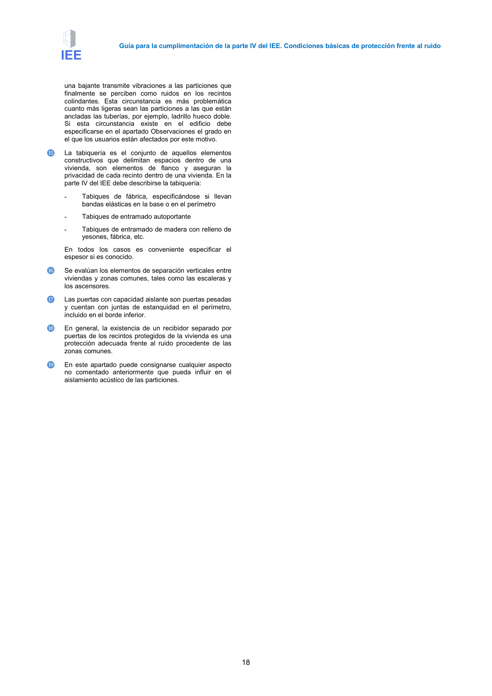
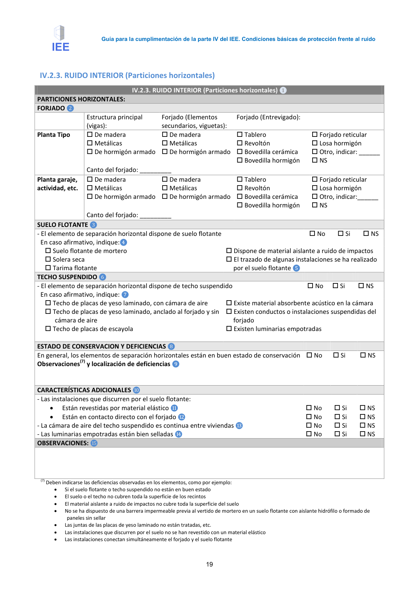

IEE 2016 · edición 2016-11-01 · capa guia
Documento GUIA-PDF-a5d4ef5252ba · SHA-256 del PDF 813669d3066c0ff79457d57b80b0512a4fbb248bc5db1f7baf473c369a064738
Copia fiel del PDF fuente · Fuente oficial
Ficha de la disposición en la fuente oficial
Créditos y autoría en el PDF fuente. Reproducción con cita de fuente y autores.
Permiso literal: Se permite la reproducción del contenido total o parcial de esta Guía siempre y cuando se haga citando la fuente original.
Guía para la cumplimentación de la parte IV del IEE. Condiciones básicas de protección frente al ruido
Dirección y coordinación
Luis Vega Catalán
Mª Cristina Colomo Fernández
Eduardo González de Prado
Dirección General de Arquitectura, Vivienda y Suelo. Ministerio de Fomento
Mª Teresa Carrascal García
Instituto de Ciencias de la Construcción Eduardo Torroja. IETcc- CSIC
Autores
Mª Teresa Carrascal García
Amelia Romero Fernández
Mª Belén Casla Herguedas
Unidad de Calidad en la Construcción del Instituto de Ciencias de la Construcción Eduardo Torroja IETcc- CSIC
Se agradece la colaboración de
Belén Delgado Giménez
Fundación FIDAS
Alberto Esteban González
C.T.O. Estudios y proyectos – Gikesa
Giovanni Muzio
C.T.O. Estudios y proyectos
Francisco Labastida Azemar
Arquitecto, asesor CSCAE
Pedro F. Nogueira López
Universidad de A Coruña
Alejandro Sansegundo Sierra
Acústica SanSegundo
Esta Guía para la cumplimentación de la parte IV del IEE. Condiciones básicas de protección frente al ruido, nace en el marco del
convenio de colaboración llevado a cabo entre el Ministerio de Fomento y el Instituto de Ciencias de la Construcción Eduardo Torroja y
forma parte de la estrategia de este Ministerio de generar una serie de documentos de ayuda que faciliten la aplicación de la normativa
de la edificación y que en este caso concreto, ofrezca a los técnicos criterios para poder realizar una evaluación del estado inicial de las
edificaciones en lo referente a las condiciones acústicas de las viviendas existentes y plantear medidas que incrementen su confort
acústico.
En la redacción de este documento se ha utilizado algunos de los contenidos y de las figuras de la Guía de aplicación del DB HR
Protección frente al ruido. Dicha guía puede consultarse en:
http://www.codigotecnico.org/index.php/menu-documentos-complementarios/menu-guia-aplicacion-db-hr
Se permite la reproducción del contenido total o parcial de esta Guía siempre y cuando se haga citando la fuente original.
2Formatos: JSON del segmento · Markdown
Particiones de fábrica de una hoja5. Las particiones de una hoja de fábrica son comunes en la construcción tradicional. Ya sea en edificios con 5También pueden clasificar aquí los muros compuestos de dos hojas de fábrica de ladrillo o sillería con cámara interior rellena de hormigón, como los “muros romanos”. estructura de madera, como en edificios de estructuras de hormigón o metálica, los muros portantes de más de 1 pie de espesor (25 cm), presentan un aislamiento acústico a ruido aéreo aceptable, suficiente como para no causar molestias graves cuando se trata de una actividad vecinal normal. Sin embargo, las particiones de una hoja de fábrica más ligeras, especialmente aquéllas de ladrillo hueco, presentan un aislamiento acústico deficiente, que suele ser agravado por la presencia de cajas de mecanismos eléctricos, cajas de registro y rozas mal retacadas. Si se conoce, debe indicarse el tipo de fábrica y espesor que compone las particiones de una hoja, ya que su Guía para la cumplimentación de la parte IV del IEE. Condiciones básicas de protección frente al ruido 16 aislamiento acústico va a depender del tipo de partición y especialmente de su masa por unidad de superficie. ❹ De una hoja con trasdosados Desde el punto de vista acústico, se consideran trasdosados a aquéllos elementos ligeros que instalados junto a una partición de una hoja pesada de fábrica o de otro material, producen una mejora del aislamiento acústico de la partición. Es condición que el trasdosado no esté conectado al elemento base o que las conexiones sean mínimas. Ejemplos de trasdosados son: - Una o varias placas ancladas a una perfilería autoportante. - Un panel formado por una placa de yeso laminado y una capa de un material absorbente acústico adherido o anclado mecánicamente al elemento base. - Una hoja de fábrica ligera con bandas elásticas perimetrales. En estos tres casos, la conexión entre el elemento base y el trasdosado es mínima o se realiza interponiendo elementos elásticos. Si es posible, indíquese si los trasdosados cuentan con un material absorbente acústico en la cámara, por ejemplo, una lana mineral, ya que esto aumenta los niveles de aislamiento acústico. En este sentido, debe recordarse que los materiales aislantes de célula cerrada no son absorbentes acústicos. ❺ De dos hojas Por lo general, el aislamiento acústico de las particiones de dos hojas es mayor que el aislamiento acústico de las particiones de una hoja, pero sus prestaciones dependen del grado de conexión entre las mismas. Lo habitual es que las hojas estén unidas a través del forjado y de los demás elementos constructivos, tales como otras particiones o la fachada y que estas uniones se hagan de forma rígida, es decir, sin interposición de bandas elásticas u otro material que aminore la transmisión acústica entre las hojas. Debe indicarse si tienen bandas elásticas y si hay un material absorbente acústico en la cámara. Véase figura IV.2.4. Figura IV.2.4. Particiones de fábrica con y sin bandas. Las bandas elásticas limitan la transmisión acústica entre las hojas de la partición, resultando el aislamiento de la misma mayor que cuando no hay bandas elásticas instaladas. ❻ Particiones de entramado metálico. En el caso de las particiones de entramado autoportante, se considera que cada una de las perfilerías o de las subestructuras es una hoja de la partición. Véase figura IV.2.3.f. Al igual que en el caso de las particiones de fábrica, debe indicarse si las particiones de entramado son sencillas o dobles, es decir, si tienen perfilería sencilla o doble. El aislamiento de las particiones dobles de entramado metálico depende de las conexiones entre cada una de las hojas y de si están arriostradas o no. Además debe indicarse si los trasdosados tienen un material absorbente acústico en la cámara. ❼ Particiones de entramado de madera con relleno de yesones, fábrica, etc. Este tipo de particiones son las más antiguas, generalmente se trata de particiones formadas por un entramado de pies derechos y carreras de madera, cuyos huecos se rellenan de ladrillo, adobe, yesones, etc. Su aislamiento acústico viene determinado por su espesor y la masa por unidad de superficie de las mismas. Pueden considerarse homogéneas de una hoja desde el punto de vista del aislamiento acústico. ❽ En cuanto al estado de conservación y deficiencias, debe indicarse si éstas son generalizadas o sólo se producen en determinados casos puntuales. Si se trata de deficiencias que no son detectables a simple vista, puede requerir realizar catas o calas, que deben hacerse en la medida en que esto sea técnica y económicamente viable. Estas son algunas de las deficiencias relacionadas con la existencia de huecos en las particiones verticales que tienen una incidencia en su aislamiento acústico: - La existencia de fisuras y/o grietas, que reducen el aislamiento acústico de las particiones. - Que el revestimiento (enlucido u otro) o el material absorbente acústico estén deteriorados. - Que las hojas estén conectadas rígidamente por algún elemento, instalación, etc. - Si existen bandas elásticas, que éstas no sobresalgan por los laterales de la partición. - Si existen rozas, que éstas no estén macizadas o retacadas. A veces las rozas no retacadas quedan ocultas por el falso techo, quedando el elemento separador desprotegido. Véase figura IV.2.5 Figura IV.2.5. Rozas no retacadas, ocultas tras un falso techo - Que los elementos de separación verticales no sean continuos de suelo a techo y se vean interrumpidos por los falsos techos. Véase figura IV.2.10. - Si se sospecha que existen cajas de mecanismos eléctricos o enchufes enfrentados por ambos lados de la partición, o que la atraviesen Guía para la cumplimentación de la parte IV del IEE. Condiciones básicas de protección frente al ruido 17 completamente. Esto es importante en el caso de particiones de una hoja o de particiones sencillas de entramado, ya que debilita el aislamiento acústico de las mismas. Véase figura IV.2.6. Figura IV.2.6.Transmisión acústica a través de cajas de enchufe enfrentadas ❾ En el apartado de características adicionales, se recogen aspectos que no pueden considerarse deficiencias, pero que pueden debilitar el aislamiento acústico de las particiones. Este apartado se refiere a la existencia de elementos como pilares, tuberías o cajas de instalaciones que conectan espacios a ambos lados del elemento de separación o aquellas situaciones que pueden causar una transmisión por flancos dominante. ❿ Pilares que conectan los recintos de una vivienda: En muchas ocasiones, los pilares están adosados al elemento de separación vertical entre viviendas o simplemente lo sustituyen. Esto es relevante cuando el pilar es ligero, por ejemplo, metálico y el elemento de separación vertical tiene dos hojas, ya sean de fábrica o de entramado autoportante. En este caso se produce una transmisión por flancos a través del pilar, que puede minimizarse si el pilar está trasdosado. Véase figura IV.2.7. Figura IV.2.7. Transmisiones indirectas a través del pilar ⓫ Esta afirmación se refiere a la transmisión aérea indirecta que puede haber entre dos recintos de viviendas diferentes que estén conectados por un conducto de ventilación o aire acondicionado. Aparte de una pérdida de aislamiento acústico, podría haber problemas de privacidad y de transmisión de ruido a través de los conductos. Se excluyen de la evaluación los conductos interiores de distribución de aire acondicionado dentro de una misma vivienda, como por ejemplo, los de una preinstalación de aire acondicionado. ⓬ Aunque no es frecuente, en edificios existentes puede darse el caso de redes de instalaciones que atraviesen el elemento de separación vertical, como por ejemplo las redes de calefacción centralizada en edificios donde se han segregado varias viviendas. Véase figura IV.2.8. Figura IV.2.8 Tubería de calefacción atravesando un elemento de separación entre dos unidades de uso en un edificio existente. El caso de la red de saneamiento colgada de cuartos húmedos se trata en el apartado de ruido de instalaciones. ⓭ Existen huecos o conductos de instalaciones adosados al elemento de separación vertical. Esta afirmación está relacionada con la existencia de patinillos de instalaciones, conductos de ventilación tipo shunt y de bajantes adosadas al elemento de separación vertical. El problema de los conductos de ventilación y bajantes de cuartos húmedos es que muchas veces se adosan a los elementos de separación verticales, a veces conectando las hojas de los mismos y sustituyendo alguna de ellas, con la consiguiente pérdida de aislamiento acústico entre recintos. Otras veces los conductos de ventilación son compartidos por dos unidades de uso, lo que causa una transmisión aérea directa a través de las bocas de admisión. Véase figura IV.2.9. Desfavorable Favorable Figura IV.2.9. Transmisión aérea a través de rejillas que comunican con un mismo conducto de ventilación de cuartos húmedos. Fuente: Guía de Aplicación del DB HR Protección frente al ruido. Véanse fichas ESV- 01.a.b.Ci, ESV02.a.Ci, ESV02.b.Ci, ESV02.c.Ci, ESV03.a.b.Ci de la Guía de Aplicación del DB HR Protección frente al ruido. En este sentido debe indicarse si se percibe ruido procedente de las otras viviendas, lo que puede ser molesto y si los conductos están revestidos, lo que evita transmisiones por flancos en el caso de elementos de separación verticales de dos hojas. ⓮ Existen tuberías ancladas al elemento de separación vertical, como por ejemplo bajantes. El flujo del agua en Guía para la cumplimentación de la parte IV del IEE. Condiciones básicas de protección frente al ruido 18 una bajante transmite vibraciones a las particiones que finalmente se perciben como ruidos en los recintos colindantes. Esta circunstancia es más problemática cuanto más ligeras sean las particiones a las que están ancladas las tuberías, por ejemplo, ladrillo hueco doble. Si esta circunstancia existe en el edificio debe especificarse en el apartado Observaciones el grado en el que los usuarios están afectados por este motivo. ⓯ La tabiquería es el conjunto de aquellos elementos constructivos que delimitan espacios dentro de una vivienda, son elementos de flanco y aseguran la privacidad de cada recinto dentro de una vivienda. En la parte IV del IEE debe describirse la tabiquería: - Tabiques de fábrica, especificándose si llevan bandas elásticas en la base o en el perímetro - Tabiques de entramado autoportante - Tabiques de entramado de madera con relleno de yesones, fábrica, etc. En todos los casos es conveniente especificar el espesor si es conocido. ⓰ Se evalúan los elementos de separación verticales entre viviendas y zonas comunes, tales como las escaleras y los ascensores. ⓱ Las puertas con capacidad aislante son puertas pesadas y cuentan con juntas de estanquidad en el perímetro, incluido en el borde inferior. ⓲ En general, la existencia de un recibidor separado por puertas de los recintos protegidos de la vivienda es una protección adecuada frente al ruido procedente de las zonas comunes. ⓳ En este apartado puede consignarse cualquier aspecto no comentado anteriormente que pueda influir en el aislamiento acústico de las particiones. Guía para la cumplimentación de la parte IV del IEE. Condiciones básicas de protección frente al ruido 19



